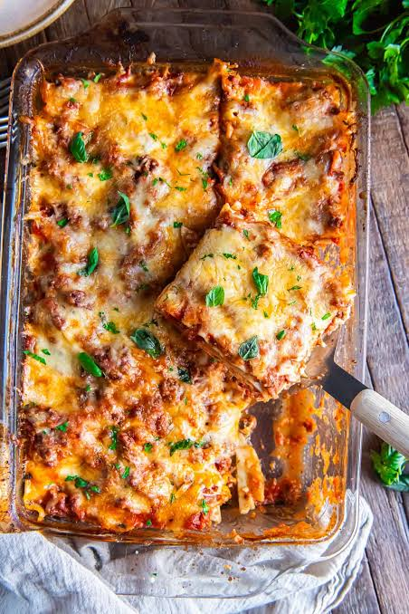

Lasagna Recipe

Description
This classic, hearty lasagna features a rich, slow-simmered meat sauce, a creamy three-cheese blend, and tender
pasta. Prep time is about 30 minutes with 2 hours of simmering and baking. It yields 8 to 10 servings.
Ingredients
For the Meat Sauce:
- 1 tbsp olive oil
- 1 onion, finely chopped
- 2 cloves garlic, minced
- 1 kg / 2 lbs ground beef
- 800 g / 28 oz canned crushed tomatoes
- 1/4 cup tomato paste
- 1 cup dry red wine
- 2 bay leaves
- 1 tsp dried oregano
- 1 tsp salt
- 1/2 tsp black pepper
For the Cheese Layer:
- 16 oz (450g) ricotta cheese
- 2 cups shredded mozzarella cheese
- 1 cup grated Parmesan cheese
- 1 large egg
For the Pasta:
- 12 lasagna noodles (standard boil or oven-ready)
Instruction to follow
- Make the meat sauce: Heat olive oil in a large pot over medium heat. Add onion and garlic, cooking until
softened. Add ground beef and brown, breaking it apart. Stir in the crushed tomatoes, tomato paste, red
wine, bay leaves, oregano, salt, and pepper. Bring to a gentle simmer, cover, and cook for 1.5 to 2 hours
until thick and rich. Remove bay leaves.
- Prepare the cheese: In a bowl, mix the ricotta, egg, and half of the mozzarella and Parmesan cheeses.
- Assemble: Preheat oven to 180°C / 350°F. Spread a thin layer of meat sauce on the bottom of a 9x13-inch
baking dish. Add a layer of noodles, followed by a layer of meat sauce, and then a layer of the cheese
mixture. Repeat these layers until ingredients are used, finishing with a layer of noodles topped with meat
sauce and the remaining mozzarella and Parmesan.
- Bake: Cover with aluminum foil and bake for 30 minutes. Remove the foil and bake for another 15-20 minutes,
until the top is bubbly and golden brown. Let rest for 15-20 minutes before slicing.
Home